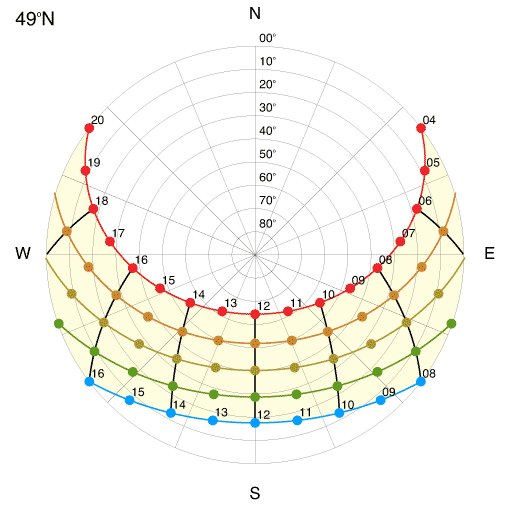
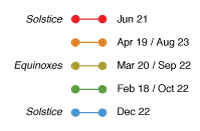

GEOB 300 - Sun path diagrams.
Latitude: 90°N 89°N 88°N 87°N 86°N 85°N 84°N 83°N 82°N 81°N 80°N 79°N 78°N 77°N 76°N 75°N 74°N 73°N 72°N 71°N 70°N 69°N 68°N 67°N 66°N 65°N 64°N 63°N 62°N 61°N 60°N 59°N 58°N 57°N 56°N 55°N 54°N 53°N 52°N 51°N 50°N 49°N 48°N 47°N 46°N 45°N 44°N 43°N 42°N 41°N 40°N 39°N 38°N 37°N 36°N 35°N 34°N 33°N 32°N 31°N 30°N 29°N 28°N 27°N 26°N 25°N 24°N 23°N 22°N 21°N 20°N 19°N 18°N 17°N 16°N 15°N 14°N 13°N 12°N 11°N 10°N 09°N 08°N 07°N 06°N 05°N 04°N 03°N 02°N 01°N 00° 01°S 02°S 03°S 04°S 05°S 06°S 07°S 08°S 09°S 10°S 11°S 12°S 13°S 14°S 15°S 16°S 17°S 18°S 19°S 20°S 21°S 22°S 23°S 24°S 25°S 26°S 27°S 28°S 29°S 30°S 31°S 32°S 33°S 34°S 35°S 36°S 37°S 38°S 39°S 40°S 41°S 42°S 43°S 44°S 45°S 46°S 47°S 48°S 49°S 50°S 51°S 52°S 53°S 54°S 55°S 56°S 57°S 58°S 59°S 60°S 61°S 62°S 63°S 64°S 65°S 66°S 67°S 68°S 69°S 70°S 71°S 72°S 73°S 74°S 75°S 76°S 77°S 78°S 79°S 80°S 81°S 82°S 83°S 84°S 85°S 86°S 87°S 88°S 89°S 90°S


The graphs show the apparent path of the sun for the two solstices (Jun 21 and Dec 22), equinoxes (Mar 20 and Sep 22) and four dates in-between as a function of latitude. The graphs show the location of the sun for different hours during the day (in a 24h clock for local apparent time, i.e. adjusted for the equation of time). See also the applet on modelled extraterrestrial short-wave irradiance as a function of latitude.
University of British Columbia - GEOB 300 - Designed and programmed by: andreas.christen@ubc.ca. Supported by a TLEF grant 'climate@ubc'.